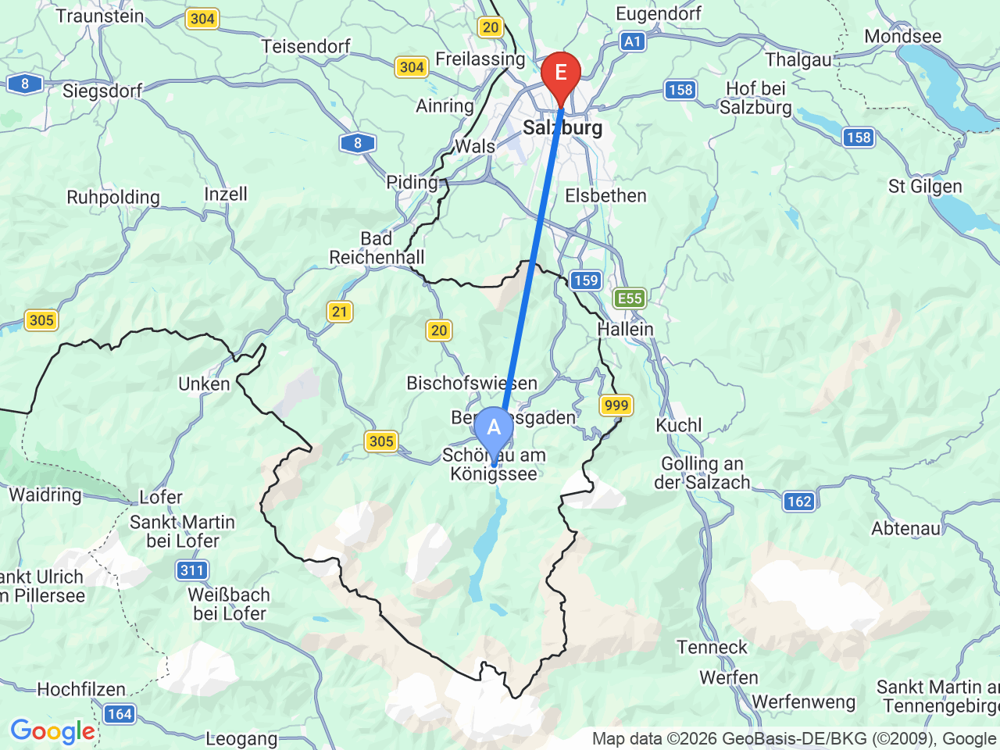

Day 30 · 2026-09-14（一）
奧地利・薩爾茲堡/德國國王湖/維也納 Day 2/9
國王湖上湖健行：Röthbachfall 瀑布與 St. Bartholomä
用預約船票，睡飽一點出發，專心享受上湖健行與 Röthbachfall 瀑布
薩爾茲堡↔國王湖

上湖健行路線（Salet→Röthbachfall）

國王湖船班時刻表（官方，2026/4/25-10/11適用）DAY 30
| 適用季節 | 去程首班(Seelände發) | 去程末班(Seelände發) | 回程首班(Salet發) | 回程末班(Salet發) | 備註 |
|---|---|---|---|---|---|
| 早春 4/25-5/22 | 09:00 | 16:15 | 09:55 | 17:10 | 之後每約30分鐘一班 |
| 中季 5/23-6/26 | 08:30 | 16:15 | 09:25 | 17:10 | 之後每約30分鐘一班 |
| 旺季 6/27-9/14 | 08:00 | 16:45 | 08:55 | 17:40 | 9/14是旺季最後一天，適用這個班表；之後每約30分鐘一班 |
| 淡季 9/15-10/11 | 08:30 | 16:15 | 09:25 | 17:10 | 之後每約30分鐘一班 |
固定時間行程DAY 30
| 時間 | 地點 | 地點 (英文) | 交通方式／班次 | 價格 | 預計停留(分鐘) | 備註 |
|---|---|---|---|---|---|---|
| 07:00 | 薩爾茲堡中央車站搭840路巴士 | 巴士約49分鐘 | 不用搶首班車，抓能悠閒吃完早餐再出發的時間即可 | |||
| 07:50 | 抵達國王湖，步行至碼頭 | 1Königssee, Germany | 步行約5分鐘 | 已有預約船票，直接排隊候船即可 | ||
| 08:45 | 搭預約船班直達 Salet（上湖碼頭） | 船程約55分鐘 | 來回約€19 | 確切時段以實際預約結果為準 | ||
| 09:40 | 抵達 Salet，開始健行 | 2Salet, Königssee, Germany | 步行 | |||
| 09:55 | 上湖（Obersee）湖畔 | 3Obersee, Königssee, Germany | 步行約1km | |||
| 10:40 | Fischunkelalm 山中小屋 | 4Fischunkelalm, Germany | 步行約1.7km | 見上方三餐資訊 | 45 | 午餐，時間充裕可以坐下來慢慢吃 |
| 11:40 | Röthbachfall 瀑布底 | 5Röthbachfall, Königssee, Germany | 步行約2km | 免費 | 45 | 德國最高瀑布，落差約470公尺；不用設折返點，慢慢拍照 |
| 13:30 | 走回 Salet 碼頭 | 步行約4.7km | ||||
| 14:25 | 搭船返回，中途可在 St. Bartholomä 下船看一次 | 船程約55分鐘（含中停） | 官方規則：去Salet的航程可在St. Bartholomä中停一次，回程順道排這裡剛好 | |||
| 14:45 | St. Bartholomä 洋蔥頭教堂 | 6St. Bartholomä, Germany | 步行 | 免費 | 30 | 國王湖最著名的拍照地標之一 |
| 15:15 | 繼續搭船返回國王湖 | 船程約35分鐘 | ||||
| 15:50 | 搭840路巴士返回薩爾茲堡 | 巴士約49分鐘 | ||||
| 16:40 | 抵達薩爾茲堡，自由活動 |
每日三餐
早餐
飯店早餐Austria Trend Hotel Europa Salzburg
07:00左右出發，飯店早餐時間應該來得及
午餐
晚餐
薩爾茲堡老城區餐廳（自由選擇）約 €15-25／人
傍晚就能回到薩爾茲堡，時間寬裕，可以找間喜歡的餐廳好好坐下來吃
住宿資訊
Austria Trend Hotel Europa Salzburg
📍 Rainerstraße 31, 5020 Salzburg